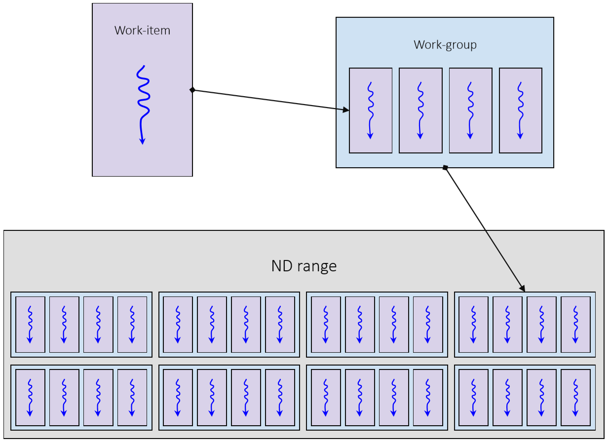
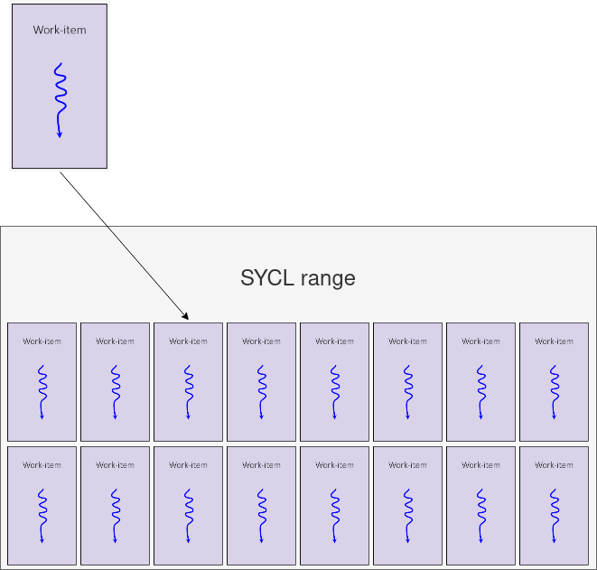

## Learning Objectives
* Learn about task parallelism and data parallelism
* Learn about the SPMD model for describing data parallelism
* Learn about SYCL execution and memory models
* Learn about enqueuing kernel functions with `parallel_for`
#### Task vs data parallelism

* **Task parallelism** is where you have several,
possibly distinct tasks executing in parallel.
* In task parallelism you optimize for latency.
* **Data parallelism** is where you have the same
task being performed on multiple elements of data.
* In data parallelism you optimize for throughput.
#### Vector processors
* Many processors are vector processors, which means
they can naturally perform data parallelism.
* GPUs are designed to be parallel.
* CPUs have SIMD instructions which perform the
same instruction on a number elements of data.
#### SPMD model for describing data parallelism
Sequential CPU code
#include <vector>
int main() {
constexpr int N = 1024;
std::vector<int> in(N), out(N);
for (int i = 0; i < N; ++i) in[i] = i;
// all iterations run in one
// thread, in a loop
for (int i = 0; i < N; ++i)
out[i] = in[i] * in[i];
for (int i = 0; i < N; ++i)
assert(out[i] == i * i);
}
Parallel SPMD code
#include <sycl/sycl.hpp>
int main() {
constexpr int N = 1024;
sycl::queue q;
int *in = sycl::malloc_shared<int>(N, q);
int *out = sycl::malloc_shared<int>(N, q);
for (int i = 0; i < N; ++i) in[i] = i;
// the body describes a
// single iteration
q.parallel_for(N, [=](sycl::id<1> i) {
out[i] = in[i] * in[i];
}).wait();
for (int i = 0; i < N; ++i)
assert(out[i] == i * i);
sycl::free(in, q);
sycl::free(out, q);
}
#### SYCL execution model
* In SYCL kernel functions are executed by
**work-items**.
* You can think of a work-item as a thread of
execution.
* Each work-item will execute a SYCL kernel function from start to end.
* A work-item can run on CPU threads, SIMD lanes,
GPU threads, or any other kind of processing
element.

#### SYCL execution model
* SYCL kernel functions are invoked within an **nd-range**
* An nd-range contains a number of work-groups which are made up of a number of work-items
* Work-groups always have the same number of work-items

#### SYCL execution model
* The nd-range describes an **iteration space** composed in terms of work-groups and work-items
* An nd-range can be 1, 2 or 3 dimensions
* An nd-range has two components
* The **global-range** describes the total number of work-items in each dimension
* The **local-range** describes the number of work-items in a work-group in each dimension

#### SYCL execution model
* Each invocation in the iteration space of an nd-range is a work-item
* Each invocation knows which work-item it is on and can query certain information about its position in the nd-range
* Each work-item has the following:
* **Global range**: {12, 12}
* **Global id**: {5, 6}
* **Group range**: {3, 3}
* **Group id**: {1, 1}
* **Local range**: {4, 4}
* **Local id**: {1, 2}

#### SYCL execution model
Typically an nd-range invocation SYCL will execute the SYCL kernel function on a very large number of work-items, often in the thousands

#### SYCL execution model
* Multiple work-items will generally execute concurrently
* On vector hardware this is often done in lock-step, which means the same hardware instructions
* The number of work-items that will execute concurrently can vary from one device to another
* Work-items will be batched along with other work-items in the same work-group
* The order work-items and work-groups are executed in is implementation defined

#### SYCL execution model
* Work-items in a work-group can be synchronized using a work-group barrier
* All work-items within a work-group must reach the barrier before any can continue on

#### SYCL execution model
* SYCL does not support synchronizing across all work-items in the nd-range
* The only way to do this is to split the computation into separate SYCL kernel functions

#### SYCL execution model
* SYCL also provides a simplified execution model with `sycl::range` in place of `sycl::nd_range`
* Caller only provides the global range
* Local range is decided by the runtime and cannot be inspected
* No synchronization is possible between work items
* Useful for simple problems which don't require synchronization, local memory and ultimate performance
* Runtime may not always have enough information to choose the best-performing size


#### Parallel_for with a range
#include <sycl/sycl.hpp>
#include <vector>
int main() {
constexpr int N = 1024;
sycl::queue q;
int *a = sycl::malloc_shared<int>(N, q);
int *b = sycl::malloc_shared<int>(N, q);
int *r = sycl::malloc_shared<int>(N, q);
for (int i = 0; i < N; ++i) { a[i] = i; b[i] = i; }
q.parallel_for(sycl::range{N},
[=](sycl::id<1> i) {
r[i] = a[i] + b[i];
}).wait();
for (int i = 0; i < N; ++i)
assert(r[i] == 2 * i);
sycl::free(a, q);
sycl::free(b, q);
sycl::free(r, q);
}
* Kernels are enqueued over a range of work-items using `parallel_for`.
* The first argument is a `range` describing the iteration space, here `N` work-items.
* The runtime chooses the local range for you.
* With a `range`, the kernel takes an `item` or, as here, an `id` giving the index within the global range.
* Each work-item runs the body once for its own index.
#### Parallel_for with an nd_range
#include <sycl/sycl.hpp>
#include <vector>
int main() {
constexpr int N = 1024, workGroupSize = 128;
sycl::queue q;
int *a = sycl::malloc_shared<int>(N, q);
int *b = sycl::malloc_shared<int>(N, q);
int *r = sycl::malloc_shared<int>(N, q);
for (int i = 0; i < N; ++i) { a[i] = i; b[i] = i; }
q.parallel_for(
sycl::nd_range<1>{N, workGroupSize},
[=](sycl::nd_item<1> item) {
sycl::id<1> i = item.get_global_id();
r[i] = a[i] + b[i];
}).wait();
for (int i = 0; i < N; ++i)
assert(r[i] == 2 * i);
sycl::free(a, q);
sycl::free(b, q);
sycl::free(r, q);
}
* `parallel_for` has overloads for the different ways of describing the iteration space.
* The `nd_range` overload specifies both the global range and the local (work-group) range.
* The kernel takes an `nd_item`, which represents both the global and local range and index.
* The `range` overloads instead take an `item` (global range + index) or an `id` (index only), where the runtime chooses the local range.
* Query the work-item's position with `get_global_id`, then index the data as before.
#### SYCL memory model
* Each work-item can access a dedicated region of **private memory**
* A work-item cannot access the private memory of another work-item

#### SYCL memory model

* Each work-item can access a dedicated region of **local memory** accessible to all work-items in a work-group
* A work-item cannot access the local memory of another work-group
#### SYCL memory model

* Each work-item can access a single region of **global memory** that's accessible to all work-items in a ND-range
#### SYCL memory model
* Each memory region has a different size and access latency
* Global memory is larger than local memory and local memory is larger than private memory
* Private memory is faster than local memory and local memory is faster than global memory

#### Exercise
Code_Exercises/Data_Parallelism/source.cpp
Implement a SYCL application using `parallel_for` to add two arrays of values
* Use USM to manage data
* Try the `sycl::range` and `sycl::nd_range` variants